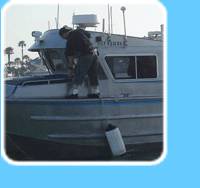

| PROJECTS |  |
| Publications |
PROJECTS LIST:
Supported through its extensive grant and contract work, the Seafloor Mapping Lab specializes in field-to-finish marine habitat survey work from the Arctic to the Antarctic. Below is a list of the work we have performed and the funding source:
2014-15 San Francisco Bay Shallow Water Mapping - OPC-NOAA-Fugro Pelagos Inc (FPI)
2014 Southern California Data Gap - Ocean Protection Council (OPC)
2013 San Clemente Island habitats- United States Navy
2012 San Nicolas Island habitats- United States Navy
2010-11 South Central Coast- Piedras Blancas to Morro Bay. CSMP
2009 Mutibeam mapping from South Morro Bay to Avila Bay to assess nearshore geomorphology. Pacific Gas & Electric (PG&E)
2008-09 Northern California surveys- Oregon border to Point Arena. CSMP
2008 Ongoing Mapping of Ocean Beach region, San Francisco. US Army Corps of Engineers and United States Geological Survey.
2008-09 Central and Southern Monterey Bay surveys. CSMP
2008 Ongoing California Seafloor Mapping Project (CSMP).
2008 Mutibeam mapping of Los Padres Reservoir.
2008 Mutibeam mapping in San Francisco West Bay. United States Geological Survey. [abstract]
2008 State Water Mapping of Catalina Island. Resources Legacy Fund Foundation (RLFF) and California State Coastal Conservancy (SCC).
2006-07 Northern Central California Mapping Project: Phase 1-Año Nuevo to Point Arena. Phase 2-Bodega Bay to Point Arena. California Coastal Conservancy (California Coastal and Marine Mapping Initiative) and CA Department of Fish and Game. Additional shiptime support provided by Monterey Bay (MBNMS), Gulf of the Farallones (GFNMS), and Cordell Bank (CBNMS) National Marine Sanctuaries. [abstract]
2006-08 Multibeam survey in the Santa Barbara Channel region. CA Coastal Conservancy. [abstract]
2006-07 Multibeam bathymetry survey of Morro Bay and Point Buchon. Center for Integrative Coastal Observation, Research, and Education (CICORE). [abstract]
2006 Multibeam sonar survey of Hueneme Canyon. United States Geological Survey.[abstract]
2006 Lobster Habitat Mapping In Support Of Community-Based Collaborative Fishery Research: Assessing Fishery Impacts Of CA Marine Reserves. Bren School, UC Santa Barbara. [abstract]
2006 Multibeam bathymetry survey of San Pablo Bay SF-10 research area. US Army Corps of Engineers.
2006 ROV and Sidescan sonar surveys of squid populations in Monterey Bay. NURC/Woods Hole Oceanographic Institute. [abstract]
2005 Strategic Mapping Workshop for California Marine Habitat Mapping. California Coastal Conservancy. [abstract]
2005 Multibeam mapping in Humboldt Bay. Center for Integrative Coastal Observation, Research, and Education (CICORE). [abstract]
2005 Habitat mapping at Cordell Bank. Cordell Bank National Marine Sanctuary.
2004-05 Habitat mapping at the mouth of San Francisco Bay. United States Geological Survey (USGS) & US Army Corps of Engineers (USACE). [abstract] [paper] [USGS video fly-through] [website]
2004-05 Habitat mapping at San Clemente Island. National Marine Fisheries Service. [abstract]
2003-06 Multibeam mapping of SIMoN priority habitat areas within the MBNMS. Monterey Bay National Marine Sanctuary, Sanctuary Integrated Monitoring Network (SIMoN).[abstract]
2002-05 Victoria Land (Antarctica) Latitudinal Gradient Project: Benthic Marine Habitat Characterization. National Science Foundation and Italian Antarctic Research Program.[abstract] [voyage_info] [field report] [Scientia Marina paper]
2003-04 Characterization of the Benthic and Planktonic Communities of Elkhorn Slough. Monterey Bay National Marine Sanctuary, Sanctuary Integrated Monitoring Network (SIMoN).[abstract] [CSUMB paper]
2003 White Abalone Habitat Mapping Survey at Cortes Bank, California. National Marine Fisheries Service.[abstract] [NOAA.summary report]
2003 Enabling "live" PDA-based GIS through wireless technology. Federal Wireless Technology Inititative.[abstract]
2002-04 Development of an integrated data acquisition and coastal marine GIS analysis system for habitat mapping and change detection in the Elkhorn Slough NERR. NOAA Cooperative Institute for Coastal and Estuarine Environmental Technology (CI-CEET).[abstract] [CSUMB paper]
2002-04 Hydrographic Data Acquisition in support of MLPA and MLMA implementation. California Department of Fish and Game.[abstract] [Final report: Summary] [Final Report: Download Document, 14MB] [Appendix: Summary] [Appendix Download, 8MB]
2002-06 Center for Integrative Coastal Observation and Research (CI-CORE). NOAA- Ocean Assessment Program.[abstract]
2002-03 Integrated Spatial Data Model Tools Set for the Auto-classification and Delineation of Species-Specific Habitat Maps from High-Resolution, Digital Hydrographic Data. NOAA National Ocean Service (NOS).[abstract] [report] [paper]
2002-03 Hydrographic Data Acquisition for
the Design and Management of Two Proposed California State Marine Protected
Areas. NOAA National Ocean Service (NOS).[abstract]
2002 Olympic Coast National Marine Sanctuary
(Washington State) multibeam bathymetry/habitat mapping survey. NOAA & OCNMS.[abstract]
2002 Nearshore Marine Habitat Mapping at Point Arena, California. California Department of Fish and Game and National Fish and Wildlife Foundation.[abstract]
2002 White Abalone Habitat Mapping at Tanner Banks, California. California Department of Fish and Game and National Fish and Wildlife Foundation.[abstract] [USGS article]
2001-04 Mapping
and Assessment of Shallow Water Habitats in Santa Monica Bay.[abstract]
[report]
[Appendix C: Sediment Data, 2MB] [Appendix D: Map Layouts, 9MB]
2000-02 Fisheries Habitat Characterization of the California Continental Margin. National SeaGrant Essential Fish Habitat Program.[abstract] [report] [Sea Grant Project Website]
2000-02 Fate and Effects of Domoic Acid in the Benthic Versus Pelagic Food Chain: Chronology, Tracking and Development of New Indicator Species. ECOHAB.[abstract] [MLML-MS Thesis]. 2008 Reprint [PDF]
2002 Development of a classification scheme for species/habitat associations and biodiversity in Antarctic benthic communities. National Science Foundation and Italian Antarctic Program.[abstract]
2000 Multibeam sonar survey of priority habitats in the San Juan Islands, Washington.
2000 Marine GIS development for Big Creek Ecological Reserve. National Marine Fisheries.
2000 California Marine Habitat Task Force Workshop, Jan 20-21. NOAA, National Ocean Service.[abstract]
1999 Video and acoustic survey of OCNMS subtidal habitats. NOAA, Olympic Coast National Marine Sanctuary.[abstract]
1992-99 Ice scour disturbance and the structure of Arctic seafloor communities. National Science Foundation.
1999-00 Initiation of the California Continental Shelf GIS of Essential Marine Habitats. California Department of Fish and Game.
1999 Marine habitat mapping of Point Lobos Ecological Reserve. California Department of Fish and Game.
1999 Fish habitat mapping of Punta Gorda Ecological Reserve. California Department of Fish and Game.
1998 Nearshore Ecosystem Data Acquisition. California Department of Fish and Game.[abstract]
1996-98 ROV-based assessment of Antarctic benthic communities and anthropogenic debris. National Underwater Research Program, NOAA.[abstract]
1996-97 Rockfish habitat mapping in Big Creek State Reserve, California Department of Fish and Game.
1995-98 Video-based assessment of benthic community changes following expansion of the Washington State sea otter population. Olympic Coast National Marine Sanctuary. NOAA.
1995-98 GIS database and browser interface development for McMurdo Station, Antarctica. National Science Foundation.
1995-97 Estuarine wetland and watershed inventory using NOAA Coastwatch change analysis project (C-CAP) protocol in California's Central Coast. NOAA and California Coastal Commission
1995-96 Seafloor mapping of habitats and anthropogenic debris near Fort Ord, Central California. Department of Defense.
1994-98 Seafloor mapping and GIS database development for anthropogenic debris and marine habitats at McMurdo. National Science Foundation.
1994-96 Impacts of Bottom Trawling Disturbance to Benthic Communities in the Monterey Bay National Marine Sanctuary. National Underwater Research Center.
1994-96 Image applications for coastal resource planning. NASA.
1994-96 Site characterization and bibliographic database for the Monterey National Marine Sanctuary. NOAA.
1993-96 Rates of tidal scour, erosion and loss of salt marsh in the Elkhorn Slough. NOAA.
1993-95 Ice Scour Disturbance in Arctic Communities. National Geographic Society.
1991-96 Monitoring and assessment of highway reconstruction on nearshore benthic communities. California Department of Transportation.
1991-92 Natural and anthropogenic disturbance in nearshore Antarctic benthic communities. National Science Foundation.
1989-90 Distribution, fate and effects of spilled fuel oil along Washington State outer coast. Minerals Management Service, Department of the Interior.
1988-89 Benthic survey of sea otter habitat, Shumagin Islands, Alaska. US Fish and Wildlife Service.
1988-90 Benthic survey and species inventory along the outer coast of the Olympic Peninsula, Washington state. Olympic National Park and Washington State Department of Wildlife.
1986-87 Assessment of sea otter prey communities around the Kodiak Archipelago, Alaska. US Fish and Wildlife Service.
Publications